Overview
These are the detailed instructions for assembling a wax foundation frame, either wired, or pinned.
Top bar and
bottom bar for
wax foundation
The top and bottom bars for frames used for wax foundation look like the picture to the right (when viewed from the end).
Bill of Materials
The parts needed for each frame are:
|
Item |
Description |
Qty |
|
|
Wooden parts |
|
|
1 |
|
1 |
|
2 |
|
1 |
|
3 |
|
2 |
|
4 |
Wax Foundation |
1 |
|
5 |
Staples - 18 gauge, 7/32” wide, 1 ½” long or |
2 |
|
7 |
Brad Nails - 18 gauge, 1” long |
6 |
|
8 |
All-weather glue (e.g., TiteBond III) |
|
|
For Horizontal Wiring | ||
|
9 |
Eyelets
|
|
|
10 |
Wire Nails - #18, ¾” long |
6 |
|
11 |
Frame Wire, 26 gauge
|
|
|
12 |
Pin Nails - 23 gauge, ½” long or |
4 |
|
For Foundation Support Pins | ||
|
14 |
Foundation support pins
|
|
|
|
Step 1 - Remove the wedge bar
|
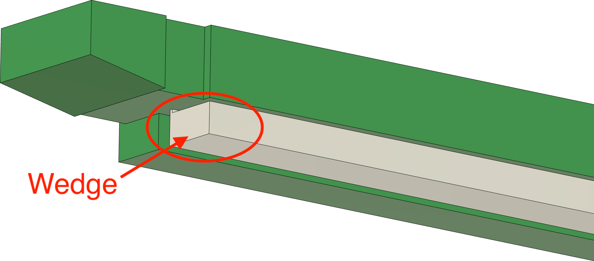 Top bar for wired wax foundation |
|
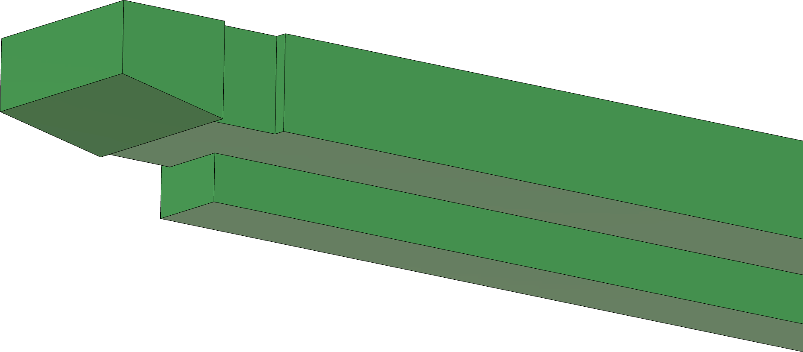 Top bar with wedge removed |
The first thing to do is remove the wedge from the top bar (part #1). You can note in the picture to the right that a small part of the wood is left holding it in place. The two parts are shown in that picture: the top bar (the green piece), and the wedge (the gray piece).
The wedge (the gray piece) can be broken away from the top bar using your thumb, or cut off using a knife. I prefer to use a knife.
If you are also a bit OCD (like me), you will use a chisel to clean up both pieces to remove the broken strip.
|
|
Step 2 - Add the eyelets to each of the side bars.
|
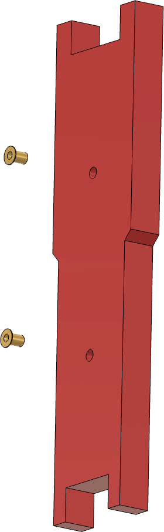 Eyelets for insertion |
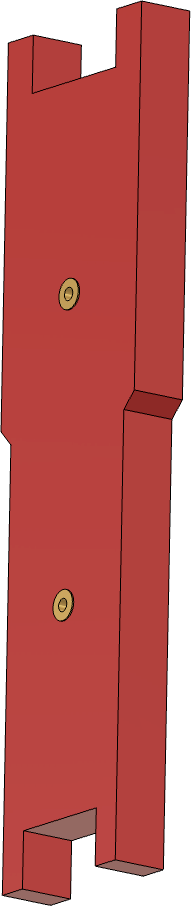 Eyelets inserted |
Ensure you have the side bars (part #3) which have holes in them. There are some which do not have holes: these are used for plastic insert foundation.
|
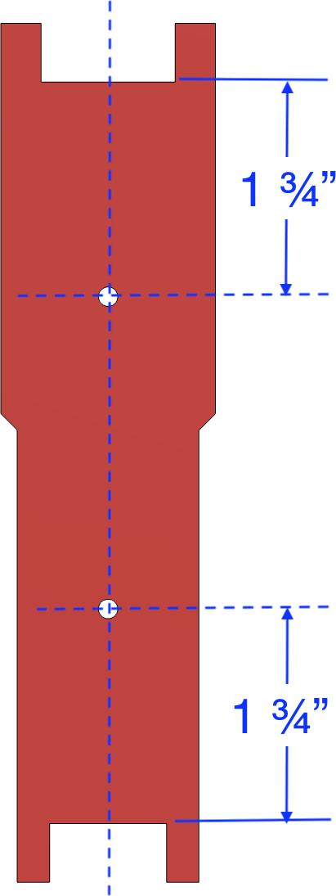 Drilling holes |
Adding holes to the side bars is not hard: Use a 9/64” drill bit, and add the holes using a drill. A drill press is preferred; but a hand drill will also work. Just be sure to drill them as accurately as possible.
For medium frames, 2 holes are needed. The holes should be around 1 ¾” from each end. The holes should also be centered left-to-right on the piece.
For deep frames, 3 holes are needed. Add holes around 1 ¾” from each end, and a third one between those two. Again, the holes should also be centered left-to-right on the piece.
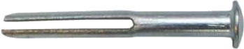
Foundation
support pin
If you are holding the wax foundation in place using foundation support pins in lieu of horizontal wires, the rest of this step is not necessary. Proceed to step 3.
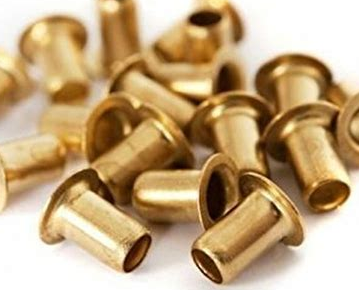
Eyelets
The purpose for the eyelets is to ensure that the wire does not cut into the wood used to make the side bar.
It is easier to insert the eyelets (part #9) into the side bars before they are attached to the top and bottom bars.
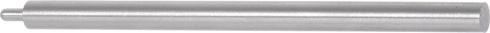
Eyelet insertion tool
The eyelet insertion tool shown to the right makes this significantly easier than trying to do the work by hand. Also, I have found it useful to insert the eyelet, and then tap the end of the eyelet insertion tool with a small mallet so that each eyelet is set a little deeper into the side bar. The idea is to not have any of the eyelet project beyond the side of the bar.
What I have also found is that:
- deep frames have 3-4 eyelets on each side, and
- medium frames have 2 eyelets on each side.
|
|
Step 3 - Attach the side bars to the top bar
|
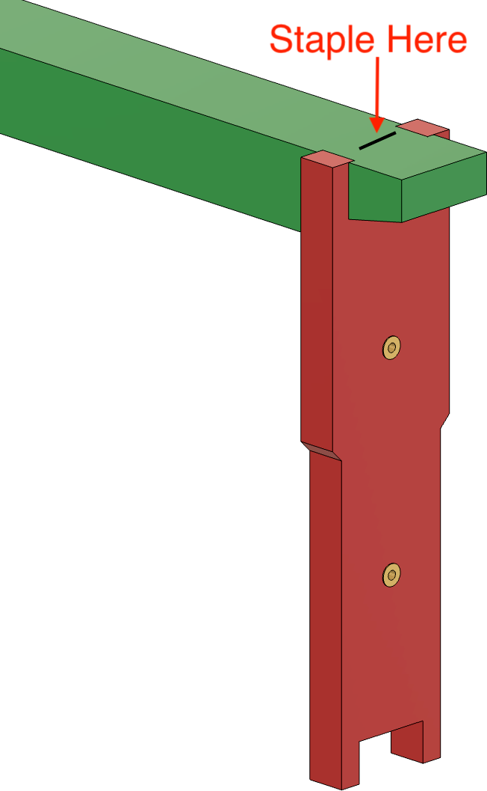 Top bar stapled to end bar |
The steps are:
- Ensure the side bars are aligned so that the eyelets are on the outside of the frame. It is not catastrophic if they are not, but moving the eyelets later is a bit of a pain.
- Glue the top bar to the end bars. Be sure to glue the pieces together with all-weather glue (part #8).
- Staple or nail the parts together.
- Add one staple (part #5), inserting it down through the top bar into each of the side bars.
- If you use nails (part #6), two are recommended (instead of one staple).
Be sure the staples or nails go down thru the top bar and into the side bars. If they go awry and poke thru the side of the side bar, try to remove the staple and add a different one. If you cannot remove it, use a pair of wire cutters to cut off as much as possible.
A frame assembly jig makes this quite easier, especially as it ensures the parts are kept aligned correctly (at a 90° angle).
|
|
Step 4 - Attach the side bars to the bottom bar
|
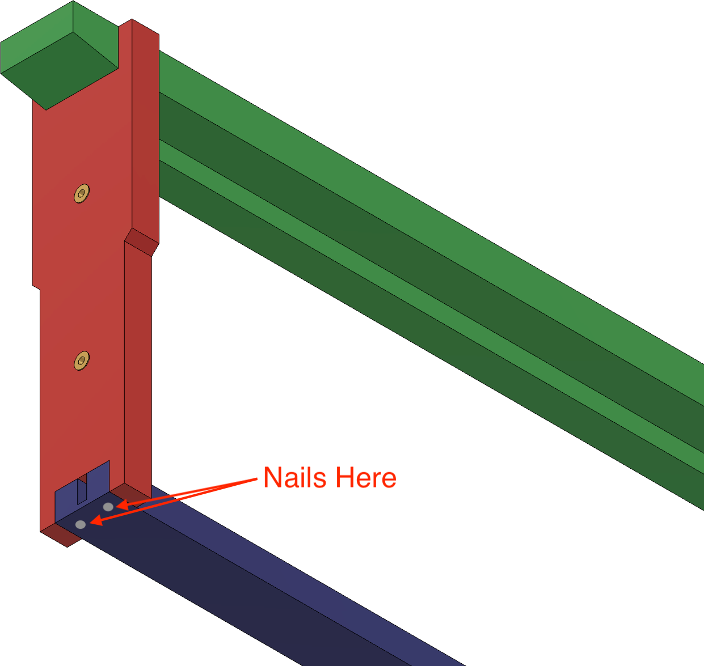 Bottom bar nailed to side bar |
The steps are:
- Glue the bottom bar (part #2) to the end bars. Again, be sure to glue the pieces together with all-weather glue.
- Add two nails (parts #7), one on either side of the slot. Staples are not recommended as they tend to crush the bottom bar.
Be sure the nails go up thru the bottom bar and into the side bar. If they go awry and poke thru the side of the side bar, try to remove the staple and add a different one. If you cannot remove it, use a pair of wire cutters to cut off as much as possible.
Again, a frame assembly jig makes this quite easier, especially as it ensures the parts are kept aligned correctly (at a 90° angle).
|
|
Step 5 - Secure the top bar to the side bars
|
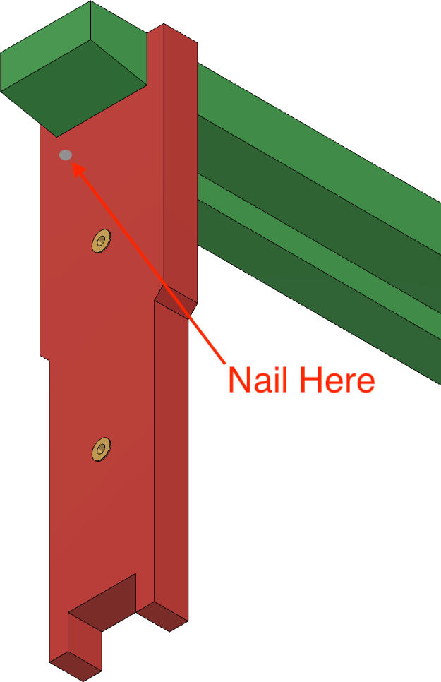 End bar nailed to top bar |
Add one nail (part #7 or part #6) thru both side bars, securing them to the top bar. These are made from the side to help the top bar not come loose from the side bars when the frame is removed from the box.
|
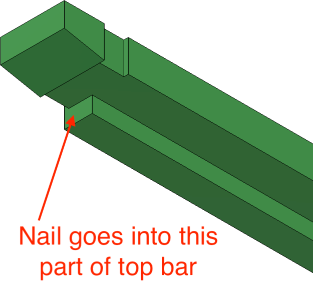 |
|
|
Step 6 - Add nails to affix the wires
|
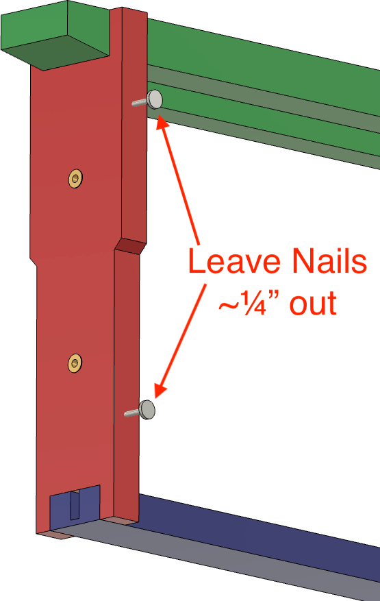 Nails to attach wiring |
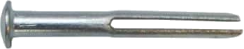
Foundation
support pin
If you are holding the wax foundation in place using foundation support pins in lieu of horizontal wires, the rest of this step is not necessary. Proceed to step 8.
On one side of the frame, add wire nails (part #10) to the side bar. These are used to hold the wires in place. Nail them into the side bar, but not all the way. Leave about 1/4” sticking up so that you can attach the wires to them easily.
|
|
Step 7 - Add the horizontal wires
|
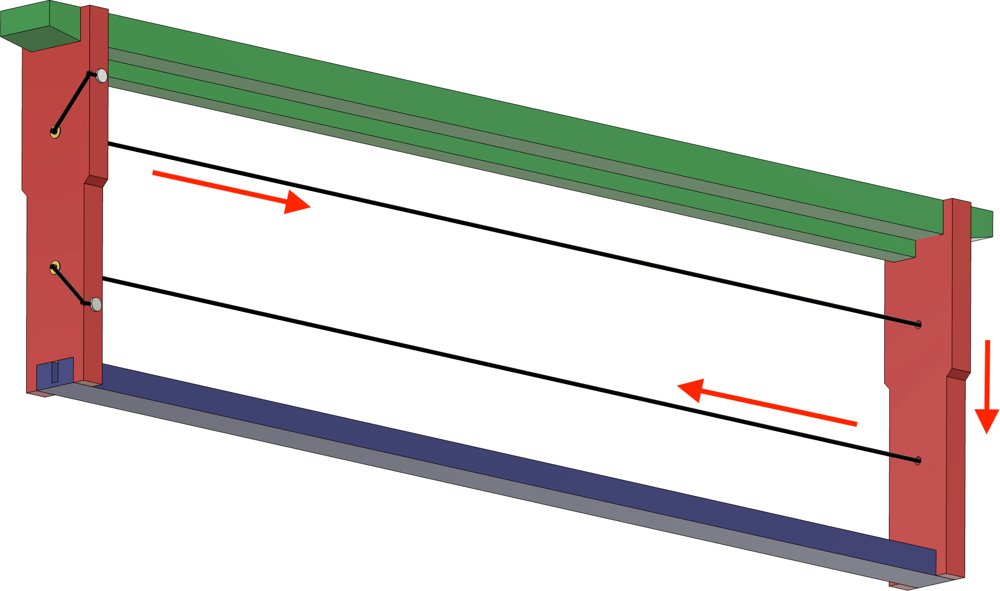 Inserting the wire |
|
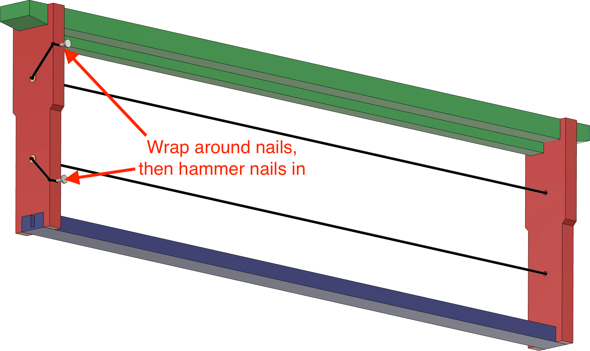 Securing the wire |
Foundation
support pin
If you are holding the wax foundation in place using foundation support pins in lieu of horizontal wires, this step is not necessary.
The steps are:
- Starting with the side with nails, insert the frame wire (part #11) thru either top eyelet.
- Pull the wire to the other side, and insert it thru the top eyelet on the other side. Pull a couple of feet of extra wire thru.
- Insert the wire thru the bottom eyelet on the same side where you just pulled it thru.
- Pull the wire to the starting side, and insert it thru the bottom eyelet on that side.
- Wrap the wire two or three times around the bottom brad / nail. Cut off any extra wire projecting away from the nail (this will stab your thumb later if you leave it).
- Pull the wire taut across the bottom, and hold it in place on the outside of the side bar opposite the nails. The wire does not have to be tight enough to be played as a banjo, but should also not sag.
- Pull the wire taut across the top, and then wrap it two or three times around the top brad / nail. Cut off the extra wire projecting away from the nail.
- Use a hammer to secure the nails into place.
|
Key Note: I have found that it is good to complete all the above steps in the Winter, and then store the frames without the wax inserted into them. If the wax is not added to the frame, there is no concern with:
The remaining steps can be completed closer to when you need to use the frames. |
Step 8 - Add the wax foundation
Using Horizontal Wires
|
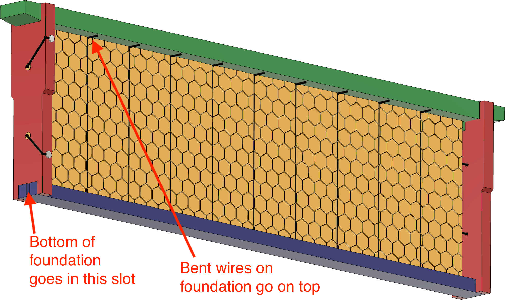 Foundation set into place |
|
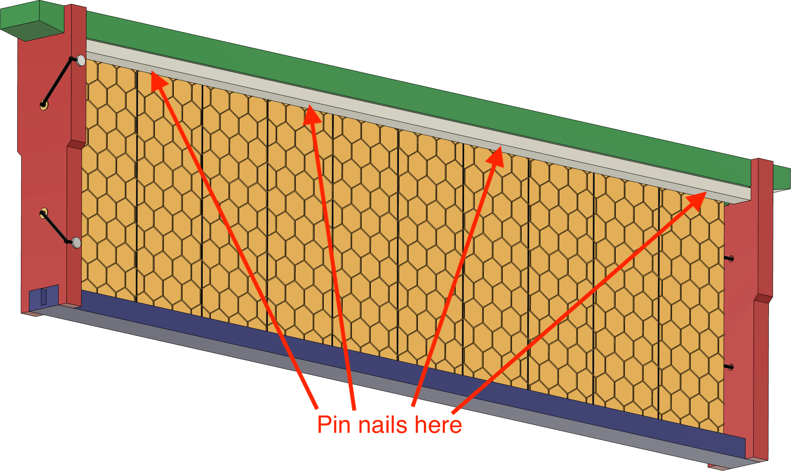 Wedge installed |
The steps are:
- Insert the wax foundation (part #4) into the frame.
- Add the wedge bar at the top, below the bent over wires. The bent wires should be held between the top bar (the green piece) and the wedge bar (the gray piece).
- Add three to five pin nails (part #12) or small brad nails (part #13) thru the wedge bar to secure it to the top bar.
|
|
Using Foundation Support Pins
|
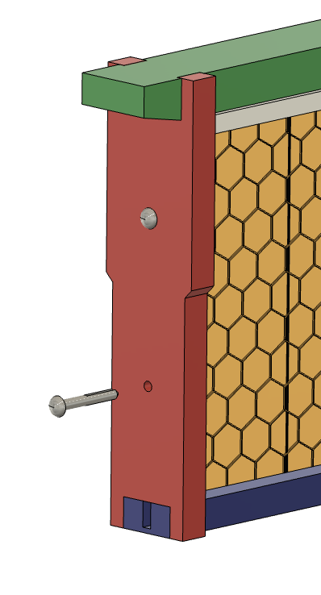 Inserting the foundation support pins |
Foundation
support pin
If you are holding the wax foundation in place using foundation support pins (part #14) in lieu of horizontal wires, these pins are inserted through the holes in the side bars, with the wax inside the split in the pins.
|
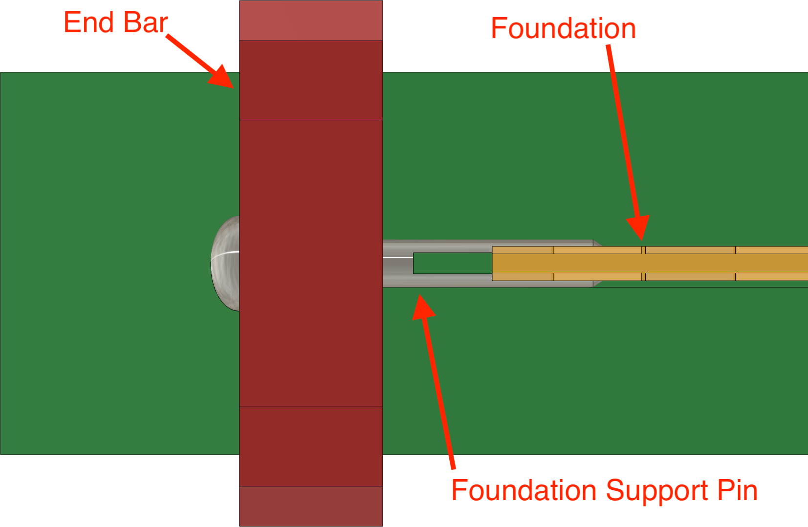 Foundation support pins Bottom bar removed for visibility |
As shown in the picture to the left, the slot in the pin goes on either side of the foundation. And, as also shown, there can be some of the slot which does not cover the foundation. It is best to center the foundation in the frame and leave the gaps where they may be.
|
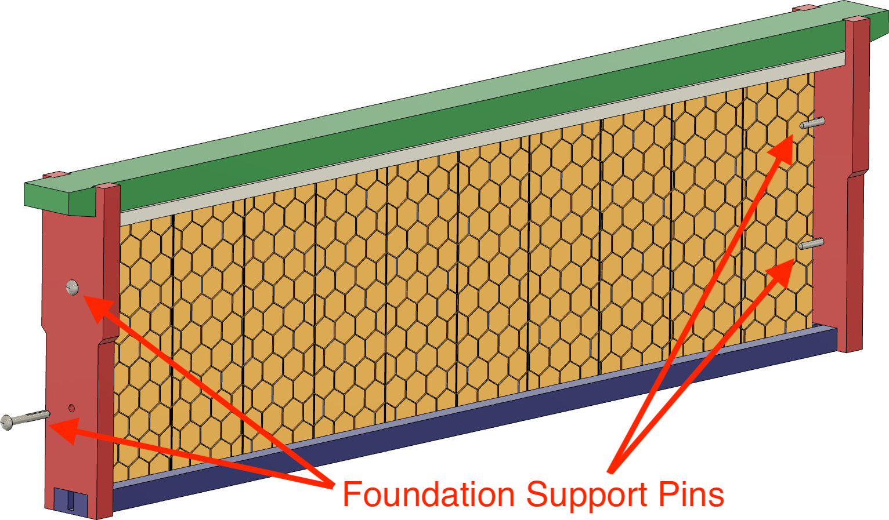 Foundation support pins - one being inserted |
One pin is inserted into each of the holes in the end bars.
|
|
Step 9 - Secure the wax foundation to the horizontal wires
If you are holding the wax foundation in place using foundation support pins in lieu of horizontal wires, this step is not necessary.
I have found that I can use a 24 volt power supply to adequately melt the wax onto the wires.
The one I use is a MeanWell LRS-100-24. These are available at a good price from Amazon or other similar sites.
|
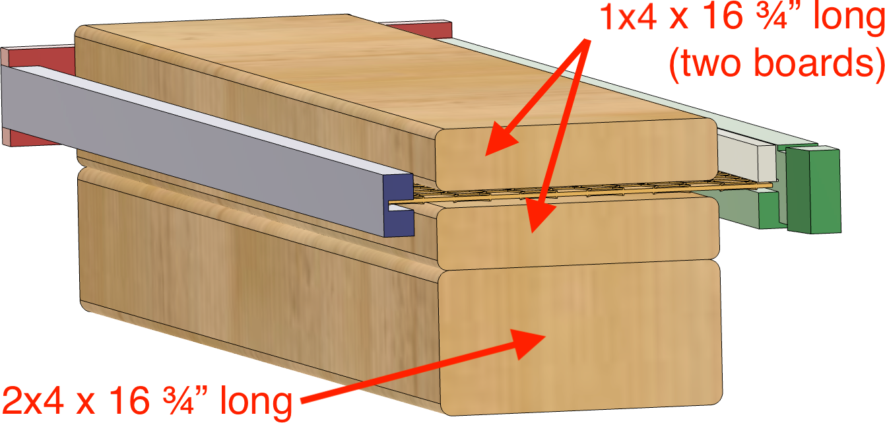 Welding jig boards (end bar removed for visibility) |
The steps are:
- Set a board on your work surface which fits between the two side bars and the top and bottom bar. This is for support.
- Set another board atop the frame. This board should be about the same size as the one on the bottom.
|
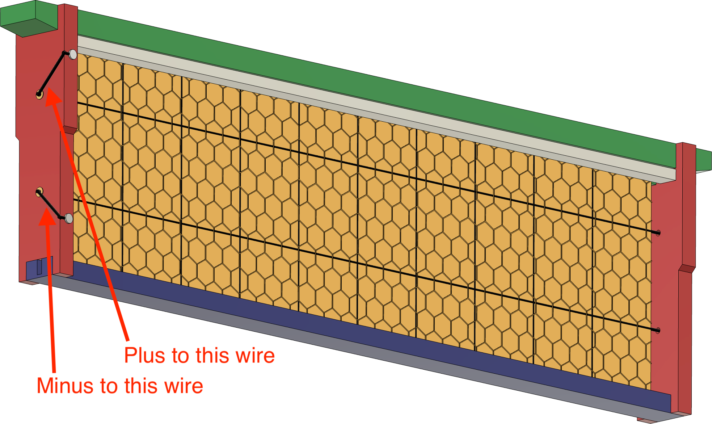 Horizontal wires welded into place |
- Lightly press the top board down, and apply the power to the ends of the wires strung between the frame. Only apply the power for 7-8 seconds ("one Mississippi, two Mississippi, ..."). Any longer and you will melt the wax too much, cutting through it.
- Be sure to disconnect the LRS-100-24 power supply from the wall outlet when you are finished.